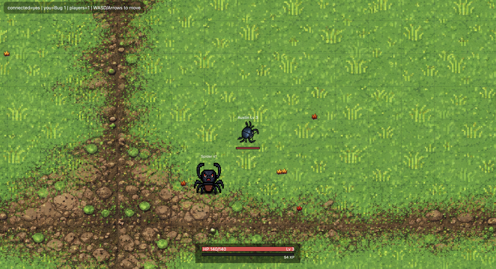

Personal Projects
A few things I’m building and experimenting with click on them to go to their github pages!

Lichess Win Analysis
This project analyzes my chess games from Lichess, providing insights into my playing style and areas for improvement. This one was cool to learn Jupyter Notebook and some Python libraries.

RolyPoly Tumble!
RolyPoly Tumble was inspired by the games I would play in class in high school. Having more experience now with webhooks and APIs, I wanted to create a game that could be played in the browser and would be fun to share with friends. I hope you enjoy this fun and engaging game built with Node.js and Express. Players control a rolling character, navigating through obstacles and collecting items. Coming to a server near you soon!

MBTA Train Timer
This project was inspired by two things. #1 - My childhood love for Trains. #2 - The frozen hellscape that is the MBTA in Boston. I wanted to create a simple web app that would allow me to quickly check the arrival times of the trains so that I didn't have to wait outside in the cold for 20 minutes wondering if the train was actually coming or if it was just late. This project uses the MBTA API to get real-time data on train arrivals and departures, and is built with Python and Flask.